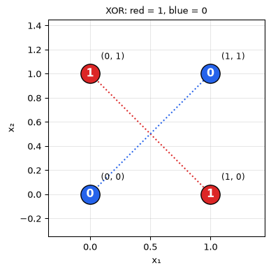
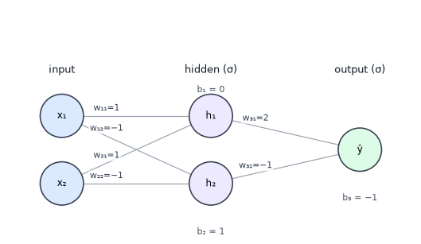
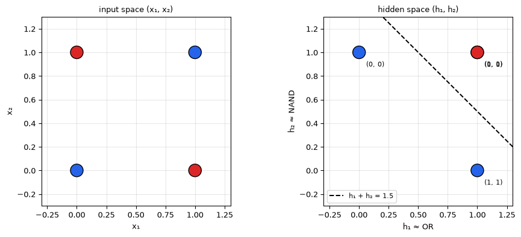
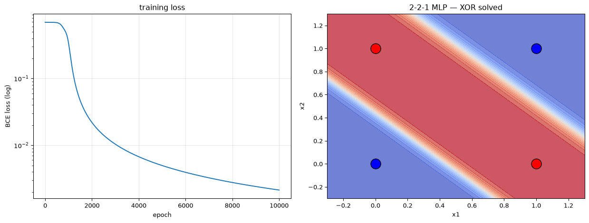
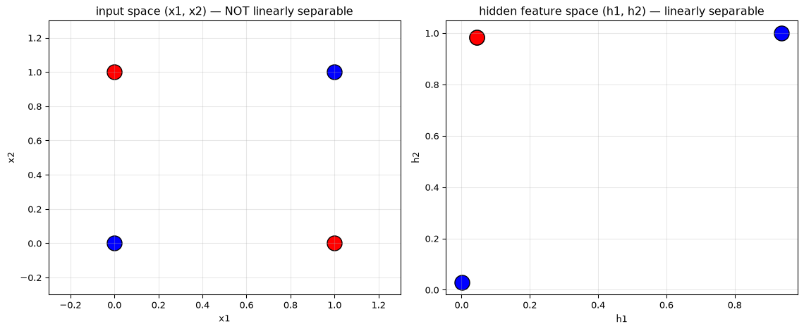

The XOR Problem
The 4-example dataset that killed neural network research for 15 years — and how a hidden layer solves it. This note walks through the classic proof that a linear model cannot solve XOR, builds the smallest MLP that can (2-2-1), and does the forward and backward pass by hand so you can watch every number.
01 The XOR problem — the classic non-linear challenge
The definition
XOR maps two binary inputs to a single binary output:
| x_1 | x_2 | y |
|---|---|---|
| 0 | 0 | 0 |
| 0 | 1 | 1 |
| 1 | 0 | 1 |
| 1 | 1 | 0 |
Output is 1 if and only if the inputs differ. Simple as it sounds, this is the smallest interesting classification task that no linear model can solve.
The visualisation

Python code for this figure
import numpy as np
import matplotlib.pyplot as plt
X = np.array([[0, 0], [0, 1], [1, 0], [1, 1]]); y = np.array([0, 1, 1, 0])
fig, ax = plt.subplots(figsize=(4.4, 4.2))
for (a, b), lab in zip(X, y):
ax.scatter(a, b, s=420, c="#dc2626" if lab else "#2563eb", edgecolors="k", zorder=3)
ax.text(a, b, str(lab), ha="center", va="center", color="white", fontsize=12, weight="bold", zorder=4)
ax.text(a + 0.09, b + 0.12, f"({a}, {b})", fontsize=9)
ax.plot([0, 1], [1, 0], ":", color="#dc2626"); ax.plot([0, 1], [0, 1], ":", color="#2563eb")
ax.set_xlim(-0.35, 1.45); ax.set_ylim(-0.35, 1.45); ax.set_aspect("equal"); ax.grid(alpha=0.3)
ax.set_xlabel("x₁"); ax.set_ylabel("x₂"); ax.set_title("XOR: red = 1, blue = 0", fontsize=10)
plt.show()Plot the four points on 2D axes. Class 1 (red) sits on one diagonal — (0, 1) and (1, 0). Class 0 (blue) sits on the other — (0, 0) and (1, 1).
Key insight: no single straight line separates the diagonals. That's what "not linearly separable" means, and it is exactly why the perceptron fails. Rosenblatt's 1958 perceptron is a straight line; it hits a wall here.
02 Why linear models fail — the contradiction proof
Not just "it's hard" — provably impossible for any weights, any bias. A three-line contradiction.
Setup
A linear model has a decision boundary that is the level set f(x_1, x_2) = 0:
Classification: predict 1 iff f > 0, else 0.
The four constraints
If the model classifies all four corners correctly:
The contradiction
Add (2) and (3): w_1 + w_2 + 2b > 0, so w_1 + w_2 + b > -b.
By (1), b \leq 0, so -b \geq 0, and therefore w_1 + w_2 + b > 0.
That is the opposite of (4). Contradiction: no choice of w_1, w_2, b satisfies all four, so no line separates XOR. (Wrapping f in a sigmoid changes nothing: \sigma(f) > 0.5 exactly when f > 0.)
No linear model can solve XOR. This is Minsky & Papert's 1969 result in the fewest steps possible.
03 The 2-2-1 MLP solution
The escape hatch: one hidden layer with a non-linear activation.

Python code for this figure
from dlviz import draw_network
import matplotlib.pyplot as plt
fig, ax = plt.subplots(figsize=(7.5, 3.8))
draw_network([2, 2, 1], ax=ax, labels=[["x₁", "x₂"], ["h₁", "h₂"], ["ŷ"]],
layer_names=["input", "hidden (σ)", "output (σ)"],
edge_labels={(0, 0, 0): "w₁₁=1", (0, 1, 0): "w₂₁=1", (0, 0, 1): "w₁₂=−1", (0, 1, 1): "w₂₂=−1",
(1, 0, 0): "w₃₁=2", (1, 1, 0): "w₃₂=−1"})
ax.text(2.2, 0.85, "b₁ = 0", ha="center", fontsize=8.5, color="#4b5563")
ax.text(2.2, -1.25, "b₂ = 1", ha="center", fontsize=8.5, color="#4b5563")
ax.text(4.4, -0.75, "b₃ = −1", ha="center", fontsize=8.5, color="#4b5563")
plt.show()Architecture
- Input layer — 2 neurons: x_1, x_2.
- Hidden layer — 2 neurons: h_1, h_2, each with sigmoid activation \sigma.
- Output layer — 1 neuron: \hat{y}, also with sigmoid.
Weight matrices:
- W_1 \in \mathbb{R}^{2 \times 2} (input → hidden), with biases b_1, b_2.
- W_2 \in \mathbb{R}^{1 \times 2} (hidden → output), with bias b_3.
Total: 9 trainable parameters — 6 weights + 3 biases. Below, w_{ij} is the weight from input x_i to hidden unit h_j, and w_{3j} the weight from h_j to the output.
Mathematical formulation of forward pass
Hidden layer:
Output:
Sigmoid and Binary Cross-Entropy loss:
Full activation-function coverage lives in note 04. The BCE loss is derived in note 05.
Why this works — intuitive explanation
The two hidden neurons learn to detect simpler features that XOR can be composed from:
- One neuron can learn OR (fires when either input is 1).
- The other can learn NAND (fires when it's NOT the case that both inputs are 1).
Then XOR = OR AND NAND. The output neuron combines them linearly — and in the hidden-layer feature space the four data points become linearly separable. The last section shows the transformation.
04 Forward pass — hand-worked, five steps
One full forward pass with specific weights. Every intermediate number.
Setup — pick specific weights
Take the input \mathbf{x} = [1, 0]^T with target y = 1 (the second row of the XOR truth table).
Weights, chosen for arithmetic simplicity:
Step 1 — hidden-layer pre-activations
Step 2 — apply sigmoid
Steps 3 & 4 — output layer
The model predicts 0.491 where the answer is 1: just on the wrong side of 0.5, and not confident either way. The loss will pull it up.
Step 5 — the loss
Not great — a perfect model would have L \to 0. This tells backprop how far off we are.
05 Backpropagation — the derivation
Compute the gradient of the loss with respect to every weight. Chain rule, layer by layer, starting at the output.
The goal
We need \partial L / \partial w for every weight. Then gradient descent updates them:
Full backprop treatment is in note 07 — this note shows the mechanics on the specific 2-2-1 network.
Two useful derivatives we'll need:
- Sigmoid: \sigma'(z) = \sigma(z) \, (1 - \sigma(z))
- BCE w.r.t. \hat{y}: \dfrac{\partial L}{\partial \hat{y}} = \dfrac{\hat{y} - y}{\hat{y}(1 - \hat{y})}
Output pre-activation — the magic simplification
The two ugly factors cancel. Call this the output error term:
This is the same identity you meet everywhere sigmoid + BCE (or softmax + cross-entropy) is used — one of the most-invoked results in deep learning.
Output-layer weight gradients
Propagate error back to the hidden layer
The error signal from the output layer flows backwards, weighted by the connection strengths and shaped by each hidden neuron's local slope.
Hidden-layer weight gradients
Same pattern for the h_2-side weights: \partial L / \partial w_{12} = \delta_2 \cdot x_1, etc.
The pattern (which generalises to any MLP):
∂L / ∂weight = (error at receiving neuron) × (activation of sending neuron).
06 Backward pass — hand-worked, one input
Plug the numbers from the forward pass into the derivation. Every gradient with specific values.
Step 1 — output-layer gradients
From the forward pass: \hat{y} = 0.491, h_1 = 0.731, h_2 = 0.500, y = 1.
Step 2 — hidden-layer error terms
Note the signs: \delta_1 < 0 means we want to increase z_1; \delta_2 > 0 means we want to decrease z_2.
Step 3 — hidden-layer weight and bias gradients
With x_1 = 1 and x_2 = 0:
Notice: because x_2 = 0, the gradients for w_{21} and w_{22} are exactly zero. Weights only get updated when the input they connect from actually fires — an intuition worth remembering.
07 Weight update
The update rule
With \alpha = 0.1:
Output layer:
- w_{31} \;=\; 2.0 - 0.1 \cdot (-0.372) \;=\; \mathbf{2.0372}
- w_{32} \;=\; -1.0 - 0.1 \cdot (-0.255) \;=\; \mathbf{-0.9745}
- b_3 \;=\; -1.0 - 0.1 \cdot (-0.509) \;=\; \mathbf{-0.9491}
Hidden layer:
- w_{11} \;=\; 1.0 - 0.1 \cdot (-0.200) \;=\; \mathbf{1.020}
- w_{12} \;=\; -1.0 - 0.1 \cdot (0.127) \;=\; \mathbf{-1.0127}
- b_1 \;=\; 0.0 - 0.1 \cdot (-0.200) \;=\; \mathbf{0.020}
- b_2 \;=\; 1.0 - 0.1 \cdot (0.127) \;=\; \mathbf{0.9873}
The weights w_{21} and w_{22} remain unchanged because their gradients were zero (since x_2 = 0).
That was one step, on one training example. The demo at the end loops this until the whole XOR truth table is correct.
Check every number with autograd
The same network, input and weights in PyTorch. backward() produces every gradient above at once; change a weight or the input and run it again to get a new hand calculation for free.
import torch
x = torch.tensor([1.0, 0.0]); y = torch.tensor(1.0)
W1 = torch.tensor([[1.0, -1.0], # row i = input xᵢ, column j = hidden unit hⱼ (entry w_ij)
[1.0, -1.0]], requires_grad=True)
b1 = torch.tensor([0.0, 1.0], requires_grad=True)
W2 = torch.tensor([2.0, -1.0], requires_grad=True)
b3 = torch.tensor(-1.0, requires_grad=True)
h = torch.sigmoid(x @ W1 + b1) # (h1, h2)
y_hat = torch.sigmoid(h @ W2 + b3)
L = -(y * torch.log(y_hat) + (1 - y) * torch.log(1 - y_hat))
L.backward()
print(f"h = {h.detach().numpy().round(3)} y_hat = {y_hat.item():.3f} L = {L.item():.3f}")
print("dL/dW1 =\n", W1.grad.numpy().round(3))
print("dL/db1 =", b1.grad.numpy().round(3), " dL/dW2 =", W2.grad.numpy().round(3), " dL/db3 =", round(b3.grad.item(), 3))
with torch.no_grad(): # one gradient-descent step, α = 0.1
for p in (W1, b1, W2, b3):
p -= 0.1 * p.grad
print("after one step: W1 =", W1.detach().numpy().round(4).tolist(), " W2 =", W2.detach().numpy().round(4).tolist())h = [0.731 0.5 ] y_hat = 0.491 L = 0.712 dL/dW1 = [[-0.2 0.127] [-0. 0. ]] dL/db1 = [-0.2 0.127] dL/dW2 = [-0.372 -0.255] dL/db3 = -0.509 after one step: W1 = [[1.0199999809265137, -1.0126999616622925], [1.0, -1.0]] W2 = [2.0371999740600586, -0.9745000004768372]
Full gradient descent treatment lives in note 06.
08 Feature transformation — why non-linearity works

Python code for this figure
import numpy as np
import matplotlib.pyplot as plt
sig = lambda z: 1 / (1 + np.exp(-z))
X = np.array([[0, 0], [0, 1], [1, 0], [1, 1]], dtype=float); y = np.array([0, 1, 1, 0])
H = np.c_[sig(20 * X[:, 0] + 20 * X[:, 1] - 10), sig(-20 * X[:, 0] - 20 * X[:, 1] + 30)] # OR, NAND
col = ["#dc2626" if k else "#2563eb" for k in y]
fig, axes = plt.subplots(1, 2, figsize=(10, 4.2))
axes[0].scatter(X[:, 0], X[:, 1], c=col, s=250, edgecolors="k", zorder=3); axes[0].set_title("input space (x₁, x₂)", fontsize=10)
axes[0].set_xlabel("x₁"); axes[0].set_ylabel("x₂")
axes[1].scatter(H[:, 0], H[:, 1], c=col, s=250, edgecolors="k", zorder=3)
for (h1, h2), xx in zip(H, X.astype(int)):
axes[1].annotate(str(tuple(int(v) for v in xx)), (h1, h2), (h1 + 0.06, h2 - 0.12), fontsize=8.5)
xs = np.linspace(-0.3, 1.3, 2); axes[1].plot(xs, 1.5 - xs, "k--", label="h₁ + h₂ = 1.5")
axes[1].set_title("hidden space (h₁, h₂)", fontsize=10); axes[1].set_xlabel("h₁ ≈ OR"); axes[1].set_ylabel("h₂ ≈ NAND")
axes[1].legend(fontsize=8.5, loc="lower left")
for a in axes:
a.set_xlim(-0.3, 1.3); a.set_ylim(-0.3, 1.3); a.set_aspect("equal"); a.grid(alpha=0.3)
plt.tight_layout(); plt.show()The key idea
The hidden layer is not just "adding parameters" — it is transforming the input space into a new one where the problem is easier.
- In the original input space (x_1, x_2), the four XOR points aren't linearly separable.
- In the hidden-layer feature space (h_1, h_2), once the network has learned good weights, the four points are linearly separable.
The output neuron then draws a simple straight line in the new space.
What the hidden neurons learn
Trained hidden neurons usually end up close to simple logical pieces, for example:
- one approximates OR (fires when either input is 1),
- the other approximates NAND (fires unless both inputs are 1),
and then \text{XOR} = \text{OR} \;\wedge\; \text{NAND}. A run may find an equivalent pair instead (OR and AND, with a negative output weight on AND); the demo below prints what yours learned.
Nobody told the network to learn OR and NAND. Gradient descent finds simpler functions that XOR can be built from. This is the essence of representation learning, and the reason depth is useful: each layer learns pieces the next layer can combine.
Full treatment of feature learning and the Universal Approximation Theorem lives in note 03.
09 Runnable demo — train the whole network
import numpy as np
import matplotlib.pyplot as plt
# XOR training data — all four rows
X = np.array([[0, 0], [0, 1], [1, 0], [1, 1]], dtype=np.float32)
y = np.array([[0], [1], [1], [0]], dtype=np.float32)
def sigmoid(z): return 1 / (1 + np.exp(-z))
class XORNet:
'''A 2-2-1 MLP trained by hand (no autograd).'''
def __init__(self, seed=0):
rng = np.random.default_rng(seed)
self.W1 = rng.normal(0, 1, (2, 2)).astype(np.float32) # (hidden, input)
self.b1 = np.zeros((2, 1), dtype=np.float32)
self.W2 = rng.normal(0, 1, (1, 2)).astype(np.float32) # (out, hidden)
self.b2 = np.zeros((1, 1), dtype=np.float32)
def forward(self, X_col):
self.Z1 = self.W1 @ X_col + self.b1
self.H = sigmoid(self.Z1)
self.Z2 = self.W2 @ self.H + self.b2
self.Y = sigmoid(self.Z2)
return self.Y
def bce(self, y_col):
eps = 1e-12
yh = np.clip(self.Y, eps, 1 - eps)
return -np.mean(y_col * np.log(yh) + (1 - y_col) * np.log(1 - yh))
def backward(self, X_col, y_col, lr=0.5):
n = X_col.shape[1]
# Output layer — the magic simplification
dZ2 = (self.Y - y_col) / n # (1, n)
dW2 = dZ2 @ self.H.T # (1, 2)
db2 = dZ2.sum(axis=1, keepdims=True) # (1, 1)
# Hidden layer
dH = self.W2.T @ dZ2 # (2, n)
dZ1 = dH * self.H * (1 - self.H) # sigmoid'
dW1 = dZ1 @ X_col.T # (2, 2)
db1 = dZ1.sum(axis=1, keepdims=True) # (2, 1)
# Gradient descent step
self.W2 -= lr * dW2; self.b2 -= lr * db2
self.W1 -= lr * dW1; self.b1 -= lr * db1
X_col = X.T; y_col = y.T
net = XORNet(seed=0)
losses = []
for epoch in range(10_000):
net.forward(X_col)
losses.append(net.bce(y_col))
net.backward(X_col, y_col, lr=0.5)
preds = (net.forward(X_col) > 0.5).astype(int).flatten()
print(f"final predictions: {preds.tolist()}")
print(f"true labels: {y.flatten().astype(int).tolist()}")
print(f"final loss: {losses[-1]:.6f}")
print(f"XOR solved: {np.array_equal(preds, y.flatten().astype(int))}")final predictions: [0, 1, 1, 0] true labels: [0, 1, 1, 0] final loss: 0.002139 XOR solved: True
Loss curve and decision boundary
fig, axes = plt.subplots(1, 2, figsize=(13, 5))
# Loss over epochs
axes[0].plot(losses)
axes[0].set_yscale('log')
axes[0].set_xlabel('epoch'); axes[0].set_ylabel('BCE loss (log)')
axes[0].set_title('training loss'); axes[0].grid(alpha=0.3)
# Decision boundary
xx, yy = np.meshgrid(np.linspace(-0.3, 1.3, 200), np.linspace(-0.3, 1.3, 200))
grid = np.c_[xx.ravel(), yy.ravel()].T
Z1 = net.W1 @ grid + net.b1
H = sigmoid(Z1)
Z2 = net.W2 @ H + net.b2
Y = sigmoid(Z2).reshape(xx.shape)
axes[1].contourf(xx, yy, Y, levels=20, cmap='coolwarm', alpha=0.75)
for xi, yi in zip(X, y.flatten()):
axes[1].scatter(*xi, c='red' if yi == 1 else 'blue', s=250, edgecolors='k', zorder=5)
axes[1].set_title('2-2-1 MLP — XOR solved')
axes[1].set_xlabel('x1'); axes[1].set_ylabel('x2')
plt.tight_layout(); plt.show()
What the hidden layer learned — feature-space view
# For each of the 4 XOR inputs, get the hidden activation (h1, h2)
Z1 = net.W1 @ X_col + net.b1
H = sigmoid(Z1).T # shape (4, 2) — one row per XOR input
# Plot: left = original input space, right = hidden-layer feature space
fig, axes = plt.subplots(1, 2, figsize=(12, 5))
for xi, yi in zip(X, y.flatten()):
axes[0].scatter(*xi, c='red' if yi == 1 else 'blue', s=250, edgecolors='k')
for hi, yi in zip(H, y.flatten()):
axes[1].scatter(*hi, c='red' if yi == 1 else 'blue', s=250, edgecolors='k')
axes[0].set_title('input space (x1, x2) — NOT linearly separable')
axes[0].set_xlabel('x1'); axes[0].set_ylabel('x2')
axes[0].set_xlim(-0.3, 1.3); axes[0].set_ylim(-0.3, 1.3); axes[0].grid(alpha=0.3)
axes[1].set_title('hidden feature space (h1, h2) — linearly separable')
axes[1].set_xlabel('h1'); axes[1].set_ylabel('h2')
axes[1].grid(alpha=0.3)
plt.tight_layout(); plt.show()
print("\nHidden-layer activations for each XOR input:")
for xi, hi, yi in zip(X, H, y.flatten()):
print(f" input {xi.astype(int).tolist()} -> h = ({hi[0]:.3f}, {hi[1]:.3f}) label = {int(yi)}")
Hidden-layer activations for each XOR input: input [0, 0] -> h = (0.000, 0.030) label = 0 input [0, 1] -> h = (0.045, 0.983) label = 1 input [1, 0] -> h = (0.045, 0.984) label = 1 input [1, 1] -> h = (0.938, 1.000) label = 0
What just happened
- Loss curve — smooth exponential decay to near-zero. The network is learning.
- Decision boundary — a curved region that puts the two diagonals on different sides.
- Hidden-space plot — the four XOR points, no longer scrambled in the diagonals, are now separable by a straight line in (h_1, h_2) space. That is the whole trick.
You just watched what took the field from 1958 to 1986 to figure out.